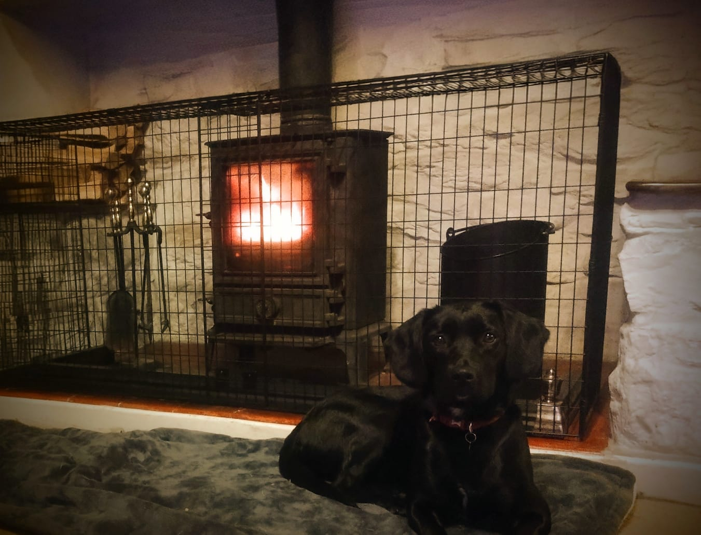
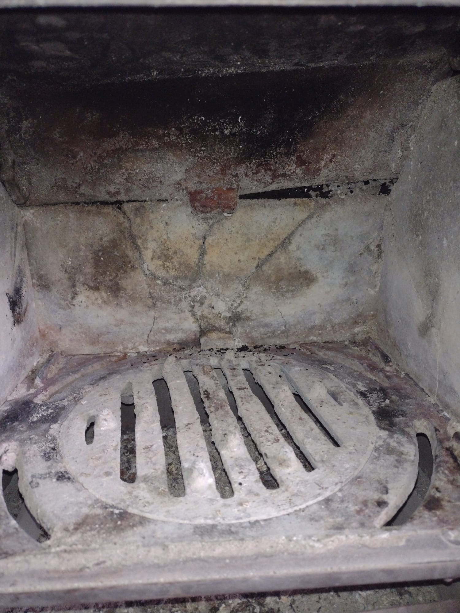

Our Services

Chimney Sweeping
We sweep the full length of the flue to remove soot, creosote and other debris, making sure that you can use your appliance safely. We will also check the condition of the appliance and provide recommendations for any necessary repairs.

Stove Maintenance
Our stoves can take a lot of abuse when used regularly. We are able to replace firebricks, door rope and stove glass to keep your stove in good working order.

CCTV Chimney Inspections
Using our 4K CCTV camera, we can check the full length of the flue for any issues or blockages and can capture images and video footage for your records.
Bird Nest and Blockage Removal
Sometimes flues get blocked by birds or other debris. We can remove these nests and clear the blockages to ensure your chimney is functioning properly.
Certificate of Sweeping
As a registered member of the National Association of Chimney Sweeps, we provide a NACS certificate for every chimney swept, after every sweep.

Power Sweeping
We use the latest in rotary chimney sweeping technology to ensure that your chimney is thoroughly cleaned and safe to use.